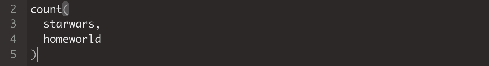

1.5 Script
Hem fet moltes coses fins ara. Si haguéssim de tornar-les a reproduir una per una, seria molt feixuc teclejar tot el codi de nou a la consola. Per sort, l’script ens evita haver de tornar a escriure totes les operacions, ja que ens serveix per anotar-hi les nostres indicacions, transmetre-les a R i reproduir-les sempre que vulguem en un moment.
1.5.1 Ordenació de l’script
L’script ens ajuda a ordenar els passos que anem fent amb R. El més adequat és ordenar-nos l’script seguint una estructura que ens permeti entendre fàcilment el que estem fent (i que pugui entendre també qui llegeixi el nostre script). Aquí tenim dos exemples de scripts:
- Estats amb vot similar a Rússia a l’Assemblea General de l’ONU
- Visualització de casos de Covid-19 a Espanya
Una de les eines més útils que té l’script és el símbol # (coixinet), que serveix tant per posar títols com per desactivar la resta d’informació que hi hagi a la dreta en la mateixa línia d’ordres. El coixinet també es pot utilitzar a la consola, però ens serà de molta més utilitat a l’script.
Per reproduir el codi que tinguem a l’script, haurem de situar el cursor a la línia de codi que vulguem reproduir i teclejar Ctrl+Enter.
Pas 11. Utilitza l’script: Per començar a utilitzar l’script, fes el següent:
- Copia tot el codi següent a l’script que havies obert anteriorment en el Pas 2.
- Posa el cursor a la primera línia de l’script.
- Prem repetidament Ctrl+Enter fins al final. Veuràs que R va llegint les indicacions de l’script. Reprodueix els resultats a la consola.
#Carreguem paquets
library(dplyr)
library(ggplot2)
library(tidyr)
library(readxl)
library(readr)
#Operacions matemàtiques
2 + 2 + 2
10 / 5
(10 + 2) / 100
#Proves amb paquet base
pi
letters #en minúscula
LETTERS #en majúscula
#Proves amb paquet dplyr
starwars
count(starwars, homeworld)Aquest és un exemple de com podem organitzar-nos el codi a l’script. Fixem-nos en dos detalls:
- R no reprodueix les línies de codi que comencen amb #.
- R no llegeix el text que hi ha a la dreta del símbol
#, a la línia de codi delettersi deLETTERS.
Ara vegem què passaria si traguéssim el coixinet.
Proves amb paquet base
letters en minúsculaEl programa ens retorna un error. R es pensa que Proves amb paquet base i letters en minúscula són els noms de diversos objectes, que òbviament no reconeix.
1.5.2 Regles bàsiques de l’script
Hi ha quatre regles bàsiques que hem de seguir quan utilitzem l’script.
- Els espais: R no llegeix els espais. Si els posem és perquè ens ajuden a entendre millor el codi. Per exemple, R llegirà igual
glimpse(starwars)queglimpse( starwars ), o també
2+2
2 + 2- Salts de línia: Quan demanem a R que llegeixi una línia de codi, el programa ens saltarà automàticament a la següent si interpreta que el codi no està finalitzat. Per exemple::
count(starwars,
homeworld)Cursor: Si el cursor està situat en qualsevol posició en la línia d’ordres de l’script, R llegirà tota la frase sencera (i això pot comportar que R també ens llegeixi línies superiors o inferiors). En el codi següent, tenim el cursor a la línia d’ordres número 5. Si premem Ctrl+Enter, anirà a buscar el principi del codi fins a la línia número 2. 
Selecció: Si en lloc de situar el cursor en una part del codi, seleccionem una part de la línia d’ordres il·luminant-la amb el cursor i premem Ctrl+Enter, R només ens llegirà aquesta part. En el codi següent, R interpreta que NOMÉS ha de llegir
starwars.
ERROR ERROR ERROR!: Quan treballem amb R, és molt habitual que ens apareguin errors a la consola. El més important és aprendre a llegir la consola per saber de quin error es tracta. Les principals fonts d’error amb les quals ens trobarem corresponen a coses que ja hem vist a hores d’ara. Aquí tenim alguns dels errors més habituals:
- Acabem un codi amb una coma (
starwars,) i R interpreta per error que ha de llegir la línia següent:
Error: unexpected ',' in "starwars,"- Acabem un codi sense tancar un parèntesi (
glimpse(starwars) i R interpreta per error que ha de llegir la línia següent:
En aquest cas apareixerà un símbol + a la consola- Acabem un codi sense tancar una cometa i R interpreta per error que ha de llegir la línia següent:
En aquest cas apareixerà un símbol + a la consola- No hem instal·lat el paquet
ddfo bé no hem escrit correctament el nom del paquet que volíem utilitzar.
Error in library(ddf) : there is no package called ‘ddf'- No tenim carregat el paquet contenidor de la funció
frtro bé hem teclejat malament el nom de la funció.
Error in frtr(dd) : could not find function "frtr"- No hi ha cap objecte que es digui
letters en.
Error: unexpected symbol in "letters en"- No hi ha cap objecte que es digui
strawars.
Error: object 'strawars' not found